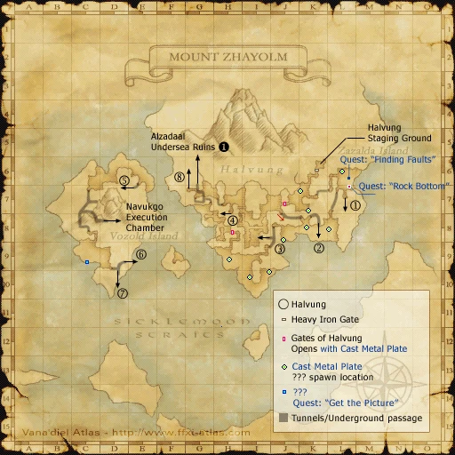
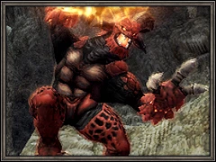
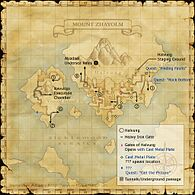

Description
Mount Zhayolm is an outdoor area in Halvung Territory.
Map

Involved in Quests / Missions
| Quest / Mission | Type | Starter | Location |
|---|---|---|---|
| Divine Interference | General | Abquhbah | Aht Urhgan Whitegate (pos=I-10) |
| Embers of His Past | General | Fari-Wari | Aht Urhgan Whitegate (pos=K-12) |
| Finding Faults | General | Hishahma | Aht Urhgan Whitegate (pos=K-8) |
| Forging a New Myth | Mythic | Nashmeira | Aht Urhgan Whitegate (pos=L-8) |
| Get the Picture | General | Balakaf | Aht Urhgan Whitegate (pos=I-5) |
| Promotion: Superior Private | Promotion | Naja Salaheem | Aht Urhgan Whitegate (pos=I-10) |
| Promotion: Corporal | Promotion | Naja Salaheem | Aht Urhgan Whitegate (pos=I-10) |
| Puppetmaster Blues | PUP | Iruki-Waraki | Aht Urhgan Whitegate (pos=K-9) |
| Rock Bottom | Map | Zurtermor | Mount Zhayolm (pos=L-7) |
| Waking the Colossus | General | Naja Salaheem | Aht Urhgan Whitegate (pos=I-10) |
NPCs
| Name | Location | Type |
|---|---|---|
| Zhayolm Apkallu | pos=L-7 | — |
| King Apkallu | pos=C-9 | — |
| Bapokk | pos=G-6 | Entry to Alzadaal Undersea Ruins |
| Waudeen | — | Assault NPC |
Notorious Monsters


Regular Monsters


Event Monsters
| Name | Level | Drops | Steal | Family | Spawns | Notes |
|---|---|---|---|---|---|---|
| Ancient Bombs | — | — | — |  ClustersImage source ClustersImage source | 1 | Spawned Quest: Totoroon's Treasure Hunt |
| Dark Rider | — | — | — |  AvatarsImage source | — | Assisted by: Dark Esquire & Dark Bugler |
| Troll Speculator | — | — | — | TrollsImage source | 1 | Spawned Quest: Finding Faults; Assisted by: Troll's Automaton |
| Vozold Jagil | — | — | — |  PugilsImage source PugilsImage source | 1 | — |

Story walkthroughs in this area
| Story | Mission / quest |
|---|---|
| ToAU 2 | Immortal Sentries |
| ToAU 22 | Shield of Diplomacy |
References
External references describe their own server or retail rules. Documented Zenith changes take precedence.
Map credits: Map 1 — HorizonXI Wiki. Original game maps © SQUARE ENIX; redrawn maps retain the credited authorship and license.

Additional level-75 reference


Found across the ocean from Cape Mazklah, beyond the Sicklemoon Straits, Mount Zhayolm is an active twin volcano that rises from the islands of Vozold and Zazalda. Home to the Troll Mercenaries, the Halvung Territory was once recognized by Aht Urhgan as an independent state of the Empire. The constant rain of volcanic ash combined with occasional emissions of sulfuric gas have created a wasteland almost completely devoid of plant and animal life--an inhospitable land that saw very few travelers before the emergence of the Astral Candescence and the ensuing struggle.
Much of the map is blocked off by the Gates of Halvung in (H-8) and (J-7). To open these, you need a Cast Metal Plate (Key Item). This is found at a ??? point that moves around the zone. It seems to pop on the mounds with dead trees and Eruca on them; there are four of these on the map, one in each open area: (K-8), ...
This area is only accessible if the Treasures of Aht Urhgan expansion is installed and The Road to Aht Urhgan quest is completed.
Connecting Areas
- Halvung at (K-8), (L-7), (I-9), ...
- Navukgo Execution Chamber at (D-8)
- Alzadaal Undersea Ruins at (G-6)
Note: In order to receive the Cast Metal Plate from the random ???, you have to check a "Gate of Halvung" after zoning into Mount Zhayolm before searching for/clicking the ??? or you won't get the Key Item.
If you see a quest that is listed as Yes but is not working properly please report it on GitHub. Make sure to list as many details as possible when describing what is not working. If there happens to already be a report on that quest regarding your problem, just add your experience to that report.
Legend
Yes = Quest is in game and working
Yes but bugged = Quest is in game but not working properly and being worked on or in que to be worked on.
No = Not in game yet but is planned
Involved in Quests/Missions
| Quest | Type | Starter | Location | Available? |
|---|---|---|---|---|
| Finding Faults | General | Hishahma | Aht Urhgan Whitegate (K-8) | |
| Get the Picture | General | Balakaf | Aht Urhgan Whitegate (I-5) | |
| Rock Bottom | Map | Zurtermor | Mount Zhayolm (L-7) | Yes |
| Promotion: Superior Private | General | Naja Salaheem | Aht Urhgan Whitegate (I-10) | |
| Mission | Country | Starter | Location | |
| Aht Urhgan Mission 2: Immortal Sentries | Aht Urhgan | Naja Salaheem | Aht Urhgan Whitegate (I-10) | |
NPCs Found Here
Fishing
Weather
|
Mining
| |||||||||||||||||||||||||||||||||||||||||||||||||||||||||||||||||

Notorious Monsters Found Here
| Name | Level | Drops | Steal | Family | Spawns | Notes | |||||||
|---|---|---|---|---|---|---|---|---|---|---|---|---|---|
| Ancient Bombs | Cluster | 1 | |||||||||||
| Cerberus | 85 | 1 | A | ||||||||||
| Energetic Eruca | 80 - 80 | Crawler | 1 | ||||||||||
| Garfurlar the Rabid | Trolls | 1 | |||||||||||
| Garharlor the Unruly | Trolls | 1 | |||||||||||
| Garhorlur the Brutal | Trolls | 1 | |||||||||||
| Giant Orobon | Orobon | Spawned by Fishing | |||||||||||
| Troll Speculator | Troll | 1 | |||||||||||
| Vozold Jagil | Pugil | 1 | |||||||||||
|
HP = Detects Low HP; M = Detects Magic; Sc = Follows by Scent; T(S) = True-sight; T(H) = True-hearing JA = Detects job abilities; WS = Detects weaponskills; Z(D) = Asleep in Daytime; Z(N) = Asleep at Nighttime | |||||||||||||
Mobs Found Here
| Name | Level | Drops | Steal | Family | Spawns | Notes | |||||||
|---|---|---|---|---|---|---|---|---|---|---|---|---|---|
| Assassin Fly | 72 - 76 | Fly | L | ||||||||||
| Dahak | 82 - 83 | Dragon | A, H | ||||||||||
| Earth Elemental | 74 - 76 | Elemental | |||||||||||
| Ebony Pudding | 79 - 79 | Black Pudding | |||||||||||
| Fire Elemental | Unknown | Elemental | |||||||||||
| Hilltroll Dark Knight | 79 - 82 | Troll | A, L, S | ||||||||||
| Hilltroll Monk | 79 - 82 | Troll | A, L, S | ||||||||||
| Hilltroll Paladin | 79 - 82 | Troll | A, L, S | ||||||||||
| Hilltroll Puppetmaster | 79 - 82 | Troll | A, L, S | ||||||||||
| Hilltroll Ranger | 79 - 82 | Troll | A, L, S | ||||||||||
| Hilltroll Red Mage | 79 - 82 | Troll | A, L, S | ||||||||||
| Hilltroll Warrior | 80 - 82 | Troll | A, L, S | ||||||||||
| King Apkallu | 78 - 80 | Apkallu | |||||||||||
| Magmatic Eruca | 71 - 75 | Crawler | A, L, H, Z(N) | ||||||||||
| Mountain Clot | 72 - 75 | Clot | A, H | ||||||||||
| Phasma | Unknown | Ghost | A, H, HP | ||||||||||
| Sicklemoon Crab | Unknown | Crab | |||||||||||
| Sicklemoon Jagil | 73 - 76 | Pugil | A, L, H | ||||||||||
| Sweeping Cluster | 73 - 75 | Cluster | A, S, M | ||||||||||
| Troll's Automaton | Unknown | Automaton | |||||||||||
| Volcanic Leech | 72 - 75 | Leech | 10 | L, H, Sc | |||||||||
| Vozold Clot | 75 - 75 | Clot | |||||||||||
| Wamoura | 80 - 82 | Wamoura | 4 |
A, L, S, M, T(H) | |||||||||
| Wamoura Prince | 79 - 81 | Wamouracampa |
L, H | ||||||||||
| Wootzshell | 69 - 71 | Crab | A, H | ||||||||||
| Zazalda Jagil | 75 - 75 | Pugil | |||||||||||
| Zhayolm Apkallu | 70 - 74 | Apkallu | |||||||||||
|
HP = Detects Low HP; M = Detects Magic; Sc = Follows by Scent; T(S) = True-sight; T(H) = True-hearing JA = Detects job abilities; WS = Detects weaponskills; Z(D) = Asleep in Daytime; Z(N) = Asleep at Nighttime | |||||||||||||
Adapted from Eden Wiki: Mount Zhayolm · Contributors and history · CC BY-SA 4.0. Revision 45707. Layout, links and optional background text adapted for Zenith.